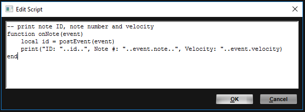

/ HALion Developer Resource / HALion Script / Getting Started /
Exploring the Code Examples
On this page:
Many of the classes and functions that are are described in the Class Reference and on the Reference pages provide working code examples. The code examples use syntax highlighting. Comments are displayed in green, functions in magenta and values in blue, for example. See Lua Syntax Highlighting for more details.
Example
-- "Hello world!" Lua script
print("Hello world!")
The easiest way to explore the code examples is to copy the code to the clipboard and to paste it to the internal script editor of the Lua Script MIDI module. Please read on for information on how to do this.
Program for Code Examples
If not stated otherwise, the following simple program will be sufficient for exploring the code examples in HALion.
- Download the program Explore Code Examples.vstpreset
- Drag the program to the Slot Rack.
To create the program manually, proceed as follows:
- Select an empty program in the Program Table.
- In the Program Tree, click Create New MIDI Module
 and select Lua Script.
and select Lua Script. - In the Program Tree, click Create New Zone and select Synth Zone.
- Load the program to the Slot Rack.
This is how your program should look like in the Program Tree.

Loading the Code Examples
The program described above should be loaded in the Slot Rack.
- Open a page with a code example, for example, onNote.
- Double-click the code example to select all lines and press Ctrl/Cmd-C to copy the code to the clipboard.
- Go to HALion and select Lua Script in the Program Tree.
- Open the section for the Lua Script MIDI module, either in the Sound editor or in the MIDI Modules editor.
- Click Edit Script to open the internal Script Editor.
- Click the Script Editor window to bring it to focus and press Ctrl/Cmd-V to paste the code from the clipboard.
- Click OK to activate the script.

Depending on the code example, you usually have to play a note or send a MIDI controller to get a sound or output message from the script. Typically, the description of the feature and the comments in the code will give you enough hints on what to do. In the example above, onNote prints the note ID, the MIDI note number and the MIDI velocity each time you play a note.